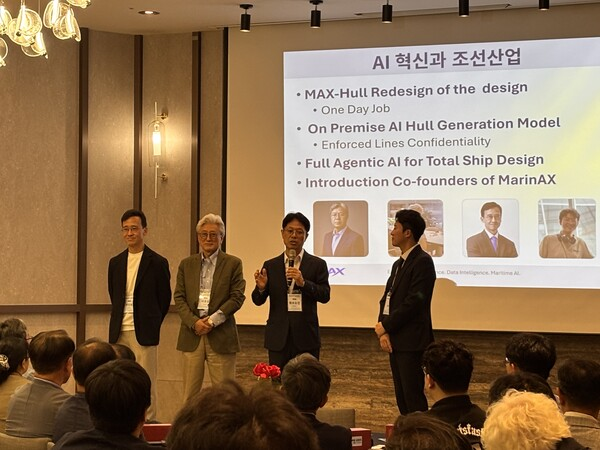

국내 주요 매체가 조명한 MAX-Hull 공개
AI 기반 선형설계 플랫폼 MAX-Hull의 공개 소식과 조선·해양 설계 업무의 변화 가능성이 국내 주요 매체에 소개됐습니다.
Korean media spotlight the MAX-Hull launch
Korean media covered the launch of MAX-Hull and its potential to change hull-form design and maritime engineering workflows.

마린에이엑스가 9월 18일 부산에서 공개한 MAX-Hull은 AI 선형 생성, 빠른 성능 예측, 연비향상 부가물 설계, CFD 해석 및 보고서 자동화, 자연어 기반 Agent-MAX를 하나의 설계 흐름으로 연결합니다.
보도가 주목한 내용
각 매체는 주요 제원과 설계 조건만으로 3차원 선체와 2차원 선도를 생성하고, 약 4,000척의 선형 데이터와 12,000건의 CFD 유동해석 데이터를 활용해 초기 성능을 빠르게 검토하는 점을 소개했습니다. 정밀 검증이 필요할 때 연결된 CFD 솔버로 이어지는 통합 작업 흐름과 기존 한 달 이상 걸리던 선형설계 업무를 하루 수준으로 단축하려는 목표도 함께 조명했습니다.
관련 보도
- 국제신문 · 2026.09.21
- 베리타스알파 · 2026.09.21
- 중도일보 · 2026.09.21
- 해사신문 · 2026.09.23
- 더쎈뉴스 · 2026.09.21
- 인디포커스 · 2026.09.23
- 인더뉴스 · 2026.09.21
- 직썰 · 2026.09.22
기사 제목, 매체명, 보도일과 원문 링크는 제공된 2026년 9월 언론 스크랩을 기준으로 정리했습니다.
MarinAX unveiled MAX-Hull in Busan on September 18. The platform connects AI hull-form generation, rapid performance prediction, energy-saving device design, CFD analysis and reporting, and the natural-language Agent-MAX in one workflow.
What the coverage highlighted
The reports described how designers can generate 3D hull geometry and 2D lines from principal dimensions and design conditions, then rapidly review early-stage performance using approximately 4,000 hull forms and 12,000 CFD flow-analysis cases. They also highlighted the connected CFD workflow for detailed validation and MarinAX's goal of reducing hull-form design work from more than a month to around one day.
Media coverage
- The Kookje Daily News · Sep 21, 2026
- Veritas Alpha · Sep 21, 2026
- Joongdo Ilbo · Sep 21, 2026
AI platform aims to reduce a month of ship design work to one day ↗
- Korea Maritime News · Sep 23, 2026
MarinAX unveils MAX-Hull, targeting a reduction in hull-form design from one month to one day ↗
- The CEN News · Sep 21, 2026
PNU faculty startup unveils AI platform to reduce month-long hull-form design work to one day ↗
- Indifocus · Sep 23, 2026
- In the News · Sep 21, 2026
PNU faculty startup MarinAX unveils AI hull-form design platform MAX-Hull ↗
- Ziksir · Sep 22, 2026
MAX-Hull unveiled in Busan: AI generates hull forms and predicts performance ↗
Outlet names, publication dates, original Korean headlines and source links were compiled from the September 2026 media clippings supplied to MarinAX. English headlines are translations for this page.